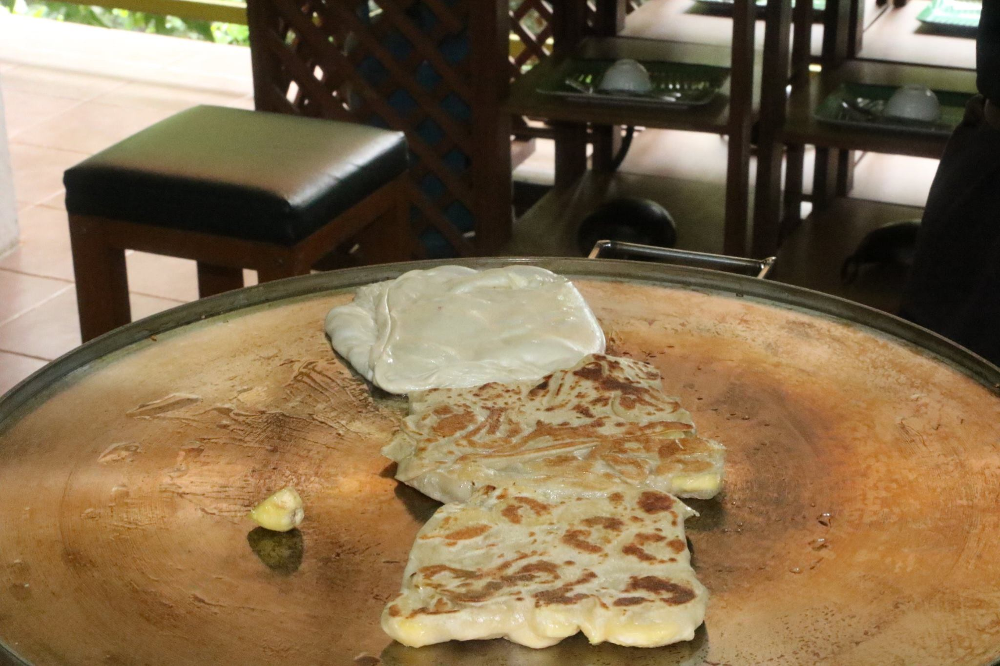
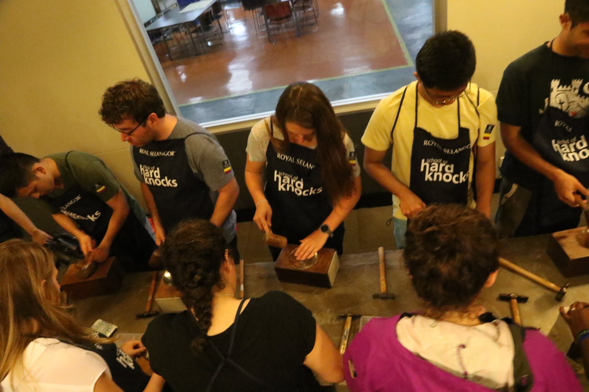

IntroductionThe Adventure Begins
"You want your first time out of the U.S. to be on the other side of the planet?" "Absolutely."
I’ve always wanted to travel to Asia, ever since I was very little. Unfortunately, we were never able to afford it. I applied for the Singapore and Malaysia trip in the Winter of 2014, and was crushed when I had to decline the invitation due to financial restraints. I was determined to participate in a study abroad during my time in college, and I knew that if I were to do so I would need to fund the trip on my own.
Fast forward a year and a half, and I’ve landed an internship with Ernst & Young. I saved religiously, contributing to my fund that would ultimately buy me a the trip of a lifetime: the Southeast Asia Immersion Trip. The majority of what I knew about Asia as a continent was dictated by three information sources: my Asia unit in Elementary school, newspapers, and my friends’ experiences traveling there. And all three information sources said the same thing: stay safe, because it is going to be very, very different from America.
This trip was my first time traveling outside of the country, and because of this I believe I have a very unique view of everything we experienced. Within those two weeks I experienced breathtaking views, incredible conversations, exhilarating adventures, and emotional rollercoasters that would leave us laying in bed at the end of the day – questioning how it all was possible.
And so, I invite you to read about my journey through five foreign countries I will never forget.
Day 0Journey to the Other Side
I arrived at Dulles International Airport at 8:00am for my 11:00am flight. Needless to say, I was a little early and spent a bit of time waiting in the terminal after checking my bags and going through security. I met a handful of people who were on the trip as well, and ventured off to have breakfast at one of the small airport restaurants. I quickly learned that the trip group was not exclusively business majors – we had engineers, computer science majors, and a few journalism and undeclared freshmen mixed in as well. We discussed our past travels – some had already been to Asia, and gave us some insight on what to expect on the other side of the world. Soon enough it was time to board the plane, and after a lot of shuffling around and murmurs of “excuse me” and “thank you” we were settled and ready to depart.
I won’t bore you with a recap of the plane ride because, honestly, it consisted mostly of sleeping, 22 Jump Street, weird plane food I could not quite recognize, and a silly iPhone game called Atomas.
Fast forward to landing in Tokyo, we pass through immigration and move to the boarding gate to meet more of those who are on our trip. Apart from signs in Japanese and a little different distribution in ethnicity, I was a little disappointed with how foreign everything felt. All the signs included English as well, and there were enough American tourists that the brands and saying I’m familiar with still passed me as I walked around to find food. Little did I realize I would return to this airport feeling much different – but that’s for later in the story.
Fast forward again through another flight, only 7 hours compared to the 13 hours from Dulles to Bangkok. Again, I won’t bore you with a play-by-play of my experience on this plane because this specific plane ride consisted of one thing: sleep.
I woke up in a panic when the plane landed. 7 hours of plane sleep accounted for about 2 hours of regular sleep, so I was still groggy and ready for bed when we entered the airport. We hustled out of immigration to meet the rest of the group, with the 40 of us lining up in two lines by the doors for taxis. In front of all of us, explaining clearly what was about to happen was our guide: Alvin. Beside him was the professor we were all familiar with, Professor Wellman. We stood patiently with all of our bags, as we watched the vans show up one by one to take on 10 or so students and their luggage. Soon it was apparent we would not have enough vans to take all of us, so the remaining students – myself and 6 others – were split into cabs. I stared out the window for the entire drive, watching as the scenery shifted from large office buildings to smaller shacks to a bustling city: Bangkok.
The hotel was incredible. We realized our first struggle with language barrier as we got out of the cab and attempted to pay the cab driver with the money that Alvin had given us. We later found out that the driver was trying to explain he had no change to give us – which at the time we thought we did not have enough money and so there was a lot of stress for no reason. I met my roommate – Jenna Boothe – and exchanged quick hellos as we ventured up to our rooms. After light unpacking, quick showers, and mumbles of goodnight, we were dead asleep.
Day 1 : BangkokFloating Markets, Waterfront Restuarants, and Elephant Riding - Oh My
One of the articles I read before departing from America focused on Bangkok, Thailand. Published in early 2014, the article explained the protests in Bangkok and why they were occurring. Even though the article was published almost two years ago, the information as still relevant for our trip to the city. The protests were primarily between the younger, educated urban middle-class and the conservative class of poor rural voters (McKirdy.) The two generations disagreed on the role of certain individuals in the government of Thailand, specifically former Prime Minister Thaksin who was convicted of corruption in 2008.
Overall, tensions are high in Thailand because of the disagreements over the government’s role in society, and the Royal Family’s decisions for the country. Before we arrived in Bangkok, we were warned from Alvin about the consequences of negative interactions with the Royal Family. We were not allowed to speak of the royal family, even if what we were saying was positive. We were also not allowed to step on, crumble, or rip the Thai baht because the royal family is displayed on the Thai currency and therefore we would be offending and portraying a negative perception of them.
Our first day of our trip was dedicated to an all day tour of some of the most popular attractions in Thailand. After boarding the charter bus and getting comfortable, we were greeted by Mollie, our tour guide. She was as enthusiastic as she was sweet as she explained our plan for the day: first visiting the floating markets, then eating authentic Thai cuisine in the floating restaurant, and finally riding elephants at a sanctuary before the four hour bus ride back to the hotel.
We arrived at the floating markets after a two-hour bus ride, and were given a short briefing of what to expect before diving into the marketplace: bargaining is not only accepted in the floating market place, but also encouraged. Mollie advised us to ask for a minimum of a 50% discount on anything we’re interested in, and to simply paddle away if they refuse. After stepping out of the bus, we were instantly in the hustle and bustle of the local market. We ducked through the maze of shops, overflowing with a large array of clothing, sculptures, jewelry, and tropical foods. We soon arrived at a small concrete dock, which dipped down into a narrow river with shops lining the edges. One by one we stepping into the canoes – four students and one local navigator per boat – and ventured off into the marketplace.
It became apparent very fast that the floating market was not just a tourist destination; it was the go-to place for locals to shop as well. The markets helped to build the economy in Thailand, and benefitted the business owners as well as the community as a whole. We veered into a shop with intricate elephant trinkets and happy Buddhas, and were greeted by a happy woman holding a calculator. In order to combat any miscommunication between languages, the large majority of the shops used calculators to negotiate prices instead of negotiating verbally. I bought a small elephant trinket for a little more than $2 – 80 baht – as others in my boat looked through the merchandise.
The market as a whole seemed to be doing very well, as we navigated through the busy river turn by turn. Soon enough it was time to dock again. We carefully stepped out of the canoes and ventured into the shops further from shore, turning sideways at times in order to move through the narrow walkways. We compared our purchases – some bought hats, others bought food, and many bought at least one item that involved an elephant. I was jealous of everyone sipping freshly cracked coconuts and eating the local fruit, but that jealousy was replaced with excitement when we finally boarded back onto the bus to drive to a floating buffet.
The bus ride was shorter this time – only a little over a half hour. We parked on the outskirts of a small city, and watched the scenery change as we walked from the barren city streets into a tropical paradise. As we approached the shore, we delved into an ally way lined and topped with greenery. We descended the stairs until we reached a floating platform complete with a jewelry store, buffet, and enough tables to not only accommodate our group of just over 40, but also dozens of other happy customers. The view was absolutely gorgeous, and we were all thrilled to finally try our authentic Thai food. For those of us who did not have pad Thai for breakfast, we flocked to the station and cleared it out immediately. I tried a variety of dishes, mostly consisting of rice, noodles, odd fruits, and prawn. We also indulged in coconut ice cream, which was surprisingly creamy and absolutely delicious. After enjoying the view and struggling with the sheer amount of food we each eat, it was time for the activity we were all waiting for: the elephants.
Elephants are an important symbol in both Thai culture and in Buddhism. As we spoke to locals, we realized the variety of roles the elephant plays in individual’s beliefs, all centering on the positive aspects of the gentle creatures. Online resources and locals agree that the elephant is a symbol of physical and emotional strength, as well as earthiness and responsibility (Choskyi.)
The moment we entered the sanctuary we were in awe. Personally, I had only seen elephants before at the zoo – and even then that was easily five or so years ago. At the sanctuary, there was nothing between the beasts and us. We walked from the bus to the wooden building that housed a few shops, tables, and a large deck that was just tall enough for people to mount the elephants without toppling off. Navigated by the employees of the sanctuary, the elephants approached one by one to the platform. The first group to depart was the “swimming” group – which we later learned was a little more than swimming with the elephants. As the elephants settled next to the deck for us to hop on, they placed their trunks onto the wooden floor to push and rub against us. After the swimming group was ready to go, the trail group mounted the elephants. I hopped on the front of an elephant with Hannah, and had a few moments of terror as I realized that the only thing balancing me on the largest land animal in the world was my thighs.
Soon enough I became comfortable and balanced, and adjusted myself as the gentle giant walked the trail – occasionally stopping for a bite to eat. Hannah and I asked our guide, who stood patiently atop the elephant, about the elephant we were riding and their lives at the sanctuary. He explained that all of the elephants we interact with are females – for our safety – and that they are happy because they are not in danger while in the sanctuary. He didn’t mention very much about their training process, though, and I felt uneasy as he confidently held a sharp pole used occasionally when our elephant became distracted. I pet her head when I was balanced enough, and swatted away flies for the dual purpose of making her happy and avoiding the unsettling movement of her ears pushing me back and forth. Too soon it was time to hop back on the deck, as we prepared ourselves for the swimming portion.
As I adjusted my clothes to prepare for the river, the first swimming group came running up – absolutely soaked and frazzled. “It’s a little rougher than swimming…in fact there is no swimming. The elephant just dunks you over and over,” explains Jake, out of breath and eyes alight with excitement. Before I have a chance to ask more, I’m hustled to the edge of the deck to join the next swimming group. I ride alone this time, and I’m convinced I’m on the same elephant as before – although it’s very possible I’m just not talented at telling elephants apart. We ride down a short pathway and a steep incline to the beach, before walking straight into the river. The elephants worked seamlessly, knowing exactly where to go and how to position themselves. We lined up next to each other, about 8 of us total, wondering what we had gotten ourselves into.
At first the elephants only sprayed us. They took a gallon or two of water into their trunks, and proceeded to spew the water at us as we sat on top of them. Then our guides began to talk to each other in Thai and prepared for the next step – dunking. We were told to sit on the trunk of our elephants, with our legs wrapped around as the tip of the trunk rose high above us. All at once, the elephants lifted their front legs off of the ground and slammed back into the water, knocking us all off. The process repeated in a variety of ways for the next 15 or so minutes – we would find our way back to our elephants trunk, be picked up, and almost immediately slammed back into the muddy waters. Towards the end we experimented more with standing on the elephants and jumping off. Unfortunately, my balance was not fantastic and I struggled to stand on the elephant for more than just a few moments. Eventually it was time to head back to shore, and we rode our elephants back up the hill to the wooden dock.
After dismounting my elephant, I set off to see something I noticed during the walk – a baby elephant. Sure enough, there was an adorable baby elephant chained to one of the posts of a nearby shelter. The father – I assume – was no longer with the elephant, and so the baby skipped back and forth with shackles on his or her two front hooves, unable to separate them. A friend on the trip asked why the baby was chained up, and the worker simply answered “for discipline.” I didn’t, and still don’t, know if that was a reasonable answer. All I can hope is that they treat the elephants well at the sanctuary, considering the role the elephants play in Thai culture and religion.
It wasn’t long until we had to head back to the city and our hotel. With just enough time to change and dry off, we were ushered back onto the bus by our lovely tour guide – Mollie – and set off on our four-hour bus ride. The excitement faded almost immediately after we departed, as the day finally hit everyone and the bus was hush with students sleeping.
Day 2 : BangkokLost at the Grand Palace
The day started just as every day for the next two weeks would start – with a wakeup call. We ate another amazing morning’s worth (or 3 morning’s worth) of breakfast, and set off to Chualongkorn University. We had the opportunity to see the University’s beautiful campus as we were escorted through the buildings and up the stairs to our lecture room for the morning. There, we learned all about Chulalongkorn, their role in Thailand and in SEAN: the Association of Southeast Asian Nations.
Chulalongkorn was founded in 1917 by King Rama VI, and was named after his father who had “laid the foundations for modern education in Thailand.” King Rama founded Chulalonkorn University with a vision that it would be operated similar to Oxford. Despite the culture differences, which are very apparent between England and Thailand, some may argue that King Rama VI achieved his vision. The current vision is now to be “Thailand’s source of knowledge and reference, a guiding light of wisdom for sustainable development” (Chula.)
We primarily spoke with the Faculty of Economics while at the University, with Asst. Professor San, Professor Chantal, and the Vice Dean. One of the interesting facts that I learned was that more women attend the University at Chulalongkorn than any other University in Thailand – which was emphasized by the fact that the Vice Dean and the Professor we spoke to were both professional women.
After discussing the history of the University, we then shifted the conversation to talk about ASEAN. The goal of ASEAN is to holistically strengthen countries in the Southeast Asian region. There are seven primary aims and purposes dictated in the ASEAN Declaration, which include (1) to accelerate the economic growth, social progress, and cultural development in the region, (2) to promote regional peace and stability, (3) to promote active collaboration and mutual assistance on matters of common interest, (4) to provide assistance to each other in the form of training and research facilities, (5) to collaborate more effectively for the greater utilization of their agriculture and industries, (6) to promote Southeast Asian studies, and (7) to maintain close and beneficial cooperation with existing international and regional organizations with similar aims and purposes (asean.) ASEAN wants to have a bigger role in the global economy, and wants to achieve that by creating free flow of goods, services, investment, capital, and skilled labor between the nations. While all of these aims and purposes seem wonderful and relatively easy to abide by, there are difficulties between the many states that make up ASEAN. With 10 very different states making up ASEAN, there are extraordinary political hurdles to overcome.
We left the lecture hall to tour around more of the Chulalongkorn campus, and took a group photo in front of the statues of the founder of Chulalongkorn. After saying our goodbyes, we left the grounds of the University into the surrounding city, and took a break for a moment to learn the names of our team members for the coming group assignments. Once Professor Wellman and Alvin had announced all the names, it was time to shuffle back onto a bus and depart for the Grand Palace. As we drove there, I imagined what the Grand Palace would look like – expecting a single magnificent building similar to an old roman catholic church. To my surprise, the Grand Palace was made up of many intricate buildings, each grander and more extraordinary than the last.
We entered the grounds after the guards ensured we were wearing the proper clothing: coverage to at least the knees and over our shoulders. Those without sleeves and with too short of shorts and dresses were given shawls to cover up. We then bought our tickets and proceeded through the main gate into the collection of Temples. Mollie led us through the intricate buildings, explaining the history behind their splendor. Every building was covered in red, green, gold, and white, with elephants commonly guarding the entrances as a symbol in Buddhist religion. We were overwhelmed with the desire to take pictures of everything – the statues of men holding up the buildings, the intricate designs on every inch of the walls, the statues of elephants guarding the temples as a symbol of the Buddhist religion, and of course the largest and most impressive building on the grounds: Wat Phra Keow.
Wat Phra Keow, commonly called the Temple of the Emerald Buddha, was constructed in 1782 when King Rama I moved the capitol of Thailand to Bangkok. King Rama I was the first king of the Chakri Dynasty, and constructed the palace to be home to royal residences, throne halls and government offices (Sternstein.) We removed our shoes as we stepped onto the deck outside of the Temple, and followed Mollie to a station of water and flowers. Mollie then dipped the flower into the holy water and used the flower as a wand to spray us and bless us. She blessed Professor Wellman a couple times more, and slowly some of began to enter the temple. Guards watched us to assure our shoes were removed as crowds of people shuffled around, in and out and around the holy ground. As I stepped into the Temple, I was in awe of the beauty of it. Everything was even more bright and radiant than was apparent on the outside – and I regret the rules to not take photos, because I’m not sure I could ever do it justice with a description. I moved to an open spot on the crowded floor and took a seat for a prayer. I prayed for my family and my friends, and thought of the slight irony in setting forth such tranquil and peaceful requests in a pushy, crowded room of strangers.
I got up to move out of the temple, feeling a little refreshed despite the heat that was slowly taking its toll on me. It was a beautiful day in Bangkok, but with the sun beating down on us and over 90 degree weather dehydrating me, I was desperate to sit somewhere air conditioned. We were told we would spend at least an hour and a half in the Temple, and it had only been 45 minutes, so Hannah and I decided to remain in the shade of the temple and take pictures with others in our group. I took a few photos of people on the top of some beautiful steps, and got caught taking photos of others who weren’t in our group for a little bit. Hannah and I turned after returning the last person’s camera to find that no one else from our group remained. Puzzled, we walked back to pick up our shoes and see if our group at the front of the Temple where we entered. When we still didn’t find anyone we knew, we began to panic. With 43 Americans in a large group at the Grand Palace in Bangkok, we had to see someone.
To our dismay, we didn’t. We searched the entirety of the grounds, and after twenty minutes, we decided it would be best if we waited at the main gate in order to catch our group leaving. I used my few texts to message home and see if anyone could get ahold of our TA, Maher, with WhatsApp. Hannah offered to turn on her data as a worst-case scenario, but we decided it was best to wait a couple minutes to see if my friends at home would reply. Unfortunately for us, it was 3pm in Bangkok, which meant it was 3am on the East Coast. By some miracle, my savior of a boyfriend was up and messaged Maher. We were told to stay in the same spot, and that someone was coming to get us. After about ten minutes, Mollie arrived and led us to a restaurant down the street where our group erupted in applause at our arrival. While everyone urged us to try the variety of Thai disses, Hannah and I stuck to water for the first couple moments – gulping down glass after glass and trying to dull down the redness in our cheeks. Eventually I ventured to try the Pad Thai, and ate only a couple bites before it was time to visit our next destination: the Reclining Buddha.
Wat Pho, the Temple which houses the reclining Buddha, is one of the oldest temples in Bangkok – constructed nearly 200 years before Rama I designated Bangkok to be the capital. The Reclining Buddha measures an astounding 49 feet high and 141 feet long, with 108 bronze bowls for donations along its length (CNN.) As we walked through the Temple, we listened to the delicate sounds of baht coins trickling down onto the Reclining Buddha. Each coin represented a prayer, and was donated to a variety of charities after being collected from underneath of the Buddha.
Exhausted, we collected in front of Wat Pho and arranged ourselves to prepare for our trek back to the hotel. The rest of the night was simply exploring the mall across the street, bargaining, and catching dinner at the Hard Rock Café in Bangkok. With another long day down, I fell asleep the moment I hit the pillow.
Day 3 : BangkokRace for Cultural Immersion
Our last day in Bangkok was dedicated to our Team Activity, in which we had quite a few business objectives and five tasks: (1) search for a new or unusual business in Bangkok, (2) visit a U.S. Business Chain, (3) perform a street interview, (4) find the coolest souvenir, and (5) experience the local culture.
We woke up and met for breakfast at around 8:30am, and planned out our day. We would start by walking across the street to the mall that housed a KFC – our assigned U.S. Business Chain – then walk to the counterfeit tech mall to catch a tuk tuk, and would then ride the tuk tuk (a motorized bike with a small carriage attached) to Chinatown. After that, we thought it was reasonable to walk from Chinatown to the Platinum Fashion Mall and back to the hotel in time for dinner.
And so with our stomachs full from our last breakfast at the Amari Watergate, the four of us set off through the streets of Bangkok. We had our eyes peeled for a new or unusual business as we walked through the mall and up six escalators to the food court on the top floor. When we arrived to the KFC, nothing seemed particularly out of place apart from everything being in both English and Thai. We soon noticed other minor differences, such as small pastries offered with meals and unusual “cooler” drinks. I ordered the blue version of the cooler drink and instantly regretted it. I felt as if I was drinking an even saltier version of a Gatorade, and made sure that everyone else in my group felt my pain and tasted the mystery drink.
After documenting the minor differences we noticed between KFCs at home and in Thailand, we descended down the escalators and went to the streets in search of a new and unusual business. Unfortunately, all of the businesses looked the same: coconuts, Buddha statues, elephant pants, repeat. When we almost arrived to the Counterfeit Tech Mall, however, I noticed something different. A shop on the street was selling stuffed owls on perches to hang up, each customizable with a variety of patterns and a free service to write names on their bellies. We decided to return if we didn’t find anything else, and took note of where to find the shop later. After arriving to the tech mall and negotiating a price with a tuk tuk, we wove through the streets of Bangkok to Chinatown. The ride was only a little unsettling, with no true enforcement of traffic laws on the busy streets. In about ten minutes we had arrived, but to our dismay, we found nothing. The streets of Chinatown were lined with the same shops over and over: gold, knick-knacks, street food, and so on. After experiencing potentially the worst mixture of smells in my life, we decided to start our walk to the Platinum Mall. We were struggling with a map we had picked up earlier in the day from the hotel, so we decided to kill two birds with one stone and ask a local some questions in addition to some guidance.
Lost outside of a temple (a recurring theme,) we asked a gentleman to help us figure out where we were on the map, and which direction the Platinum Mall was. Once he gave us directions, we pushed to ask a few more. We told him we were students from America, and what he thought of America. “Very big country, very different from here,” he replied, conscious of his remarks. We then asked him about the economy in Thailand, and what he thought about the competitive advantages and challenges in the country. He explained in broken English that tourism is a very big advantage for Thailand, but that the government power and political unrest was definitely the largest challenge. He went on to say that the prices would go up tomorrow because of decisions regarding Thailand’s army, which we struggled to understand further due to the language barrier. We thanked him profusely for taking the time to speak with us, and set off in the direction he pointed us to.
The gentleman definitely had reason behind stating that one advantage of Thailand is the tourism sector. When we visited Chulalongkorn the day prior, Professor Chantal explained that the two strongest business sectors in Thailand are tourism and agriculture – both of which have been experiencing growth in the past decade. The gentleman was also right in stating that politics plays a part in the challenges for Thailand, as Passport states “prolonged political turmoil undermined investor and consumer confidence” as a major weakness for the country (Euromonitor International.)
With two of our five tasks complete, and one task being completed as we venture through Bangkok, we walked in the direction we believed the Platinum Mall to be. Unfortunately for us, we were wrong, and about 30 minutes of walking and a 15-minute tuk tuk ride later, we actually arrived. Our two tasks left were to find the coolest souvenir and to find a unique business, and we believed we would succeed in finding at least one in the Platinum Mall.

The Platinum Mall is a mall in the heart of Bangkok that is known for its counterfeit items. While all of Thailand is known for its counterfeit culture, Platinum Mall is the crème de la crème. This being said, we decided we could achieve the task of immersing ourselves in the culture while also finding a unique business and souvenir within the mall. When we entered, we were certainly overwhelmed. With endless hallways to each side of us, and escalators that zig zagged up four stories, we simply picked a direction and searched. After about twenty minutes of searching for souvenirs – debating between a CD of a Thai pop group and a many T-Shirts with funny sayings – we found the perfect one: a small stuffed turtle with the colors of the flag of Thailand. Thinking of home and the University of Maryland, we strolled through more shops in search of a unique Thai business. After a fruitless search, we decided to return to the owl shop and purchase some owls of our own. Walking back through the streets, we kept our eyes open for anything more unique than the owl shop – but found nothing. We bought our owls and shopped around for a few moments more before realizing the time and rushing to the hotel lobby.
We waited with the group for about an hour, playing on our phones and discussing what we were and were not able to complete for the Team Activity. Eventually Alvin and Dr. Wellman arrived and escorted us out to the streets to walk to dinner in one of the tallest restaurant in Thailand: Sky Bar. As we walked through the crowded streets and alleyways, the shops seemed to cave in on us with a narrowing that required a single file line to pass. Suddenly, Professor Wellman runs up behind us in a panic, asking where Alvin was. We pointed ahead of us, and he shoved through the masses of people past where we could see. We later learned at the restaurant, over a buffet in which I ate a plate of sushi bigger than my head and the first dessert I truly couldn’t even swallow, that Professor Wellman had his wallet stolen in that moment. Reminded of the dangers of Bangkok, we suddenly were not as upset to leave the city for a less dangerous and more tropical city.
After sneaking off with fellow classmates to visit the rotating rooftop deck and enjoying the spectacular view of Bangkok from over 820 feet up, we left the restaurant for our hotel. We were much more careful through the narrow streets on the way back, to say the least. Once we claimed our luggage and packed everything into the bus, we were off to the airport for our next adventure: Phuket.
Day 4: PhuketDiving in Foreign Waters
Day 4 actually started with landing in the Phuket airport extremely late at night, busing to the hotel, and falling asleep in the lobby as we waited to check in – but I’ll fast forward through that for your sake.
Our first day Phuket – which I must mention was absolutely gorgeous – was spent with the fantastic Namaloo Divers day diving in Patong, Thailand. Our hotel was built into a hillside, in which the rooms were split into condo-like structures amongst the jungle. We ate breakfast at the top of the hotel, overlooking the city and the ocean, and enjoyed the sunrise until our vans arrived. With multiple vans instead of buses this time around, we drove about 45 minutes to the dock where our diving guides were meeting us. They were enthusiastic from the very start, and sat us all down on the top floor of the boat to tell us what to expect for the day. After getting the run down on the rules for the boat, our diving groups, our schedule, and when to expect food, we left the dock for our first diving location. The boat ride to our first location was about an hour, and we all enjoyed ourselves in the sun by tanning or sitting out on the dock talking about how nervous, excited, or a mix of both we felt. Personally, I was terrified. But I reminded myself that I wasn’t going caving, so I owed myself a little adventure when abroad the first time. About fifteen minutes before docking I met with my group and our guide to go over the ins and outs of basic diving. By the end of the talk I was unsure if I understood everything completely, but I reassured myself it would feel natural in the water. I was wrong.
I put on the wetsuit and flippers and fumbled around the dock of the boat for a little while, trying to get used to my new attire. Once everyone else was ready, I was instructed to sit down in order to attached my oxygen tank. For one reason or another, it came as a surprise to me when standing was extremely difficult with the large tank attached to my back, and I experienced a moment of desperate fear when I jumped into the water – afraid that the tank would drag me down. Of course, the tank did not drag me down. With my life vest inflated and the contents of the tank naturally buoyant, I skimmed across the surface to where our guide wanted us to go and to experiment with the equipment. I practiced descending down into the water, and was doing fine until I had to neutralize myself. I couldn’t for the life of me get my ears to pop the way he instructed, and so I struggled for a few moments before motioning that I had to go up. It took a few more attempts before I realized that swallowing was a better trick for me. Soon I descended into the water with my group to explore the depths of the oceans off of Thailand’s coast – and I’m happy I did.
The pictures do not do the experience justice. With vibrant colors and interesting shapes and sizes, the world above paled in comparison to the world I saw scuba diving. While I did enjoy the sights, I struggled every time I remembered I was attached to a tank in order to breathe. I enjoyed the moments as I counted them down, and soon enough we had looped back to where we started and boarded back on the boat.
We ate lunch as we set off to the next diving spot, where we would swim deeper into the ocean and spend a longer period of time under water. I played cards with the group and we talked about liking or disliking diving: in which everyone was in consensus that it was amazing. Before long we were at the second diving site, suiting up for our final dive. I was more in control of my motions and equalizing this time around, and the views were even more breathtaking as we descended about 20 feet into the ocean. I couldn’t tell how long we had been in the water, sometimes it felt like just a minute and sometimes it felt like an hour, but I was far from bored. We practiced hand signals and watched out for poisonous wildlife as we swam along. Just as before, we looped back to the boat by the time we rose above the water. I felt a mixture of sadness and relief that the dive was over as I boarded the dock. Those feelings were quickly replaced by excitement, however, when Jay S threw me a beer to celebrate my completion.
Our next spot to dock was right off the coast of a local beach, where we were advised, “the swim is much farther than it looks.” Hannah, Natalie, Jenna, Eli, Matt, and I were not convinced. We should have been. After an exhausting swim to the beach and an exhausting swim back, I was prepared to fall asleep on the top of the boat in an instant. Luckily, I was able to hold off until later in the night.
The boat headed in the direction of the dock again, as we all lay out in the sun talking about our day and the possibilities for the night. We said our goodbyes to the Namaloo Divers, thanked the entire crew, and debarked the boat to return to our hotel.
Day 5: PhuketDuckies, Caves, and ... Bat Poop?
Our second day in Phuket was to be spent similar to the first: on the water. We woke up at around the same time for breakfast before departing in our vans to the shore. We arrived at the dock and were met by the John Grey Canoes Eco Tour guides, who were all very happy to help us onto the boat and up the ladder to the main deck. We sat around the edges of the boat, gossiping about the day before and about what we could expect today. Phil mentioned something about bat poop, which I dismissed – though I shouldn’t have.
Our guides introduced themselves and explained our schedule for the day: we would go through one cave, have lunch, then go through two more caves and finally take a break at a small beach. We were going to traverse the caves on banana boats, two of us on each boat with one guide, and they welcomed us to bring our electronics in their waterproof bags. Hannah and I agreed to share a boat after the meeting, and watched the scenery as we passed through islands rising stories above us, made of rock and greenery to contrast the turquoise waters.
A little over an hour passed, and we finally arrived to our first caving spot. We discovered that the guides on our boat would not be the only guides accompanying us – as we pulled up to a boat sizable to ours with at least 20 more guides ready to go. We descended down to the bottom deck of the boat, and one by one we stepped onto our banana boats and were paddled away. Hannah and I joked with our guide, as he asked us about America and our favorite movies and told us about his love for Will Smith. We approached the edge of the cave and he pointed out monkeys on the small beach, close enough to touch if I was crazy enough to reach out. Passing by the monkeys, our guide brought us into the pitch-black cave, with only the sound of the paddle hitting the water and the murmur of our classmates reverberating against the walls. Moments passed before we saw light again, turning through the crooked crevices of the cave into a small watering hole within the stone island. We paddled around the alcove as our guide pointed out the animals – such as frogs and fish – in addition to the vegetation that covered the stone surrounding us.
We entered the caves again, this time a much smaller cave in which we had to bend down to pass through. Less time passed this time around before we were back in another, much larger alcove. Our guides lined us up facing Alvin for a picture, as he coaxed us to go into the water. Kat was the first to jump in, immediately sinking into the mud that lined the floor. Others followed suit as Hannah and I agreed to stay in the boat. Alvin then announced that the floors of the caves were layered with bat poop, which is very good for your skin. His remarks did not faze us – Hannah and I still did not want to jump into the water. But, as Kat does, she changed our minds. A ball of “mud” came flying our way, splattering all over Hannah and I. Chaos in the form of a mud fight ensued, as everyone tackled the people still on their canoes and mud flew threw the air in all directions.

The next trip through the caves was similar to the last, although the views will never become less breath taking. I paddled for a little bit through the alcoves, but had to pass the paddle back to my guide when we reached the mouths of the caves which required a little more skill than I had in my arsenal. We reached another spot where bat poop was in abundance, so I scooped up a handful and saved it to throw at Matt on the ride back to the boat – and my aim was on point. We boarded the boat again to travel to the small beach, which was only about 20 minutes away. Our guides let us take boats out or swim to the isolated shore against the stone island, where we wrote “UMD” in the sand and played limbo with broken driftwood. One guide challenged the boys to attempt a feat the guides could accomplish: having ten men stand up in one of the ducky boats. Of course the boys tried it, and failed – miserably. We tried it as girls, and flipped the boat over almost immediately. We spent more time swimming and paddling around before we were told we had to head back to the docks.
Before leaving we were challenged to another task: to run across five duckies attached to the back of the boat without falling off. Once all of the duckies were attached and straightened out on the water, one of our guides immediately jumped off the deck and sprinted across them without any trouble. He jumped off the last one into the water, and urged us to make a line and try it. Vivek was the first to do it successfully, after several attempted which only made it to the third ducky at best. Personally I slipped off the moment I stepped on the first time, and my future attempts were not noticeably better. Everyone tried at least once before we set off for Phuket. As the boat began to pick up speed towards the docks, everyone took in the view for one last time. As I stared out at the mountains of beautiful greenery erupting from the misty blue ocean, all I could think was: “Today was incredible.”
Day 6: Kuala LumpurCooking in Paradise ... and a Race in the Airport
I’ll fast forward through our flight from Phuket to Kuala Lumpur – which no one was awake for – and our ride to the hotel to bring us to the morning of January 17th. Don’t worry, spoiler alert, you’ll get to hear about the next adventure in traveling from Kuala Lumpur to Johor.
When I arrived in Malaysia, I wasn’t sure what to expect. Unlike Thailand, I had not learned very much about Malaysia prior to the trip and the only real articles I read were about the lost Air Malaysia flight – which didn’t give me a great impression. When traveling through the city, however, I was surprised at how clean and modern the city of Kuala Lumpur was to Bangkok. In the SWOT analysis of Malaysia, conducted by Euromonitor International, they identified the developed financial market and the good infrastructure as key strengths for the country. These strengths were evident as we drove through the city to the Patronous towers – our first destination of the day.
Unfortunately, the Petronas towers did not have our reservation. So instead of going inside the building and taking pictures from on of the highest points in Kuala Lumpur, we took pictures of the towers – which were pretty impressive in and of themselves.
The next stop for me was the Malaysian Cooking School, while the majority of the group chose to do caving instead. With my fear of small spaces and my love of food, spending the afternoon cooking traditional Malaysian meals seemed like the obvious choice. We drove out of the city and into the rural jungle, watching as the roads became narrower and rockier. After about an hour of driving and joking with the group about how our experience will be so much better than the cavers, we arrived at the bottom of a large hill gravel hill. The bus driver informed us we had to walk from here, because the hill was too steep for the bus to travel up. Luckily, the cooking school was built into the top of the hillside, which was not a long ways away. As I walked up the slope and around the path, I enjoyed the scenery and all of the amazing beauty that the jungle had to offer. When we arrived to the cooking school, I was surprised to see a tree-house looking structure. We were lead to a room that resembled a large enclosed patio, with a dining table that could serve at least 20 people. They served us tea in addition to some traditional Malaysia fruits: mangosteen and langsat. Both the tea and the fruit were delicious. The director of LaZat, the cooking school we were visiting, spoke to us about her background and what we could expect throughout the day. She explained that we would be making three dishes, all of which we would have the opportunity to eat, before concluding the day and departing to our next destination.
She then passed us on to our first instructor, to teach us how to make traditional Malaysia bread: roti canai. When our instructor first made it in front of us, going through all of the steps as if they were as simple as cracking an egg, I was convinced I could never make the dish. However, after working with us carefully and showing us every step one more time in depth, I was able to make both traditional plain roti canai and a stuffed roti canai with sugar, bananas, and cinnamon – a dish I will definitely be making at home. Our instructor explained that roti canai is not simply a recipe or food for the Malays, but also a vital piece of their culture.
After eating a large variety of roti canai and a bowl of amazing curry, we watched our next instructor show us how to make our main dishes: Kuih cara berlauk and sambal udang. I worked diligently at my station, hoping to not draw any negative attention from our intimidating instructor. I was pleasantly surprised when she only came to my side to complement my work, and I glowed in response to her praise. After we packaged our meals and cleaned our stations, we returned to the room where we sat earlier that morning. The director of the LaZat sat with us as we ate more fruit – which I do not know how we managed to eat after the sheer amount of food we had throughout the day – and discussed the meaning of the foods we made in respect to Malaysian culture.
Fruits especially are very important to the culture of the Malays. The fruit we ate earlier that morning is only abundant in Malaysia and neighboring regions, and provides a sense of home for Malays. The kuih cara berlauk – or “savory meat filled cups” – are recognized as appetizers and are made with local ingredients including a favorite for the Malays: chilies. The curry we had is differentiated from Thai and Indian curry because of the abundance of chilies, galangal, garlic, and lime leaves – all recurring ingredients in Malaysian dishes (Frisch.) Lastly, the nasi lemak (rice in coconut milk), and sambal udang (prawn in sambal sauce) is a common dinner for Malays and includes staple ingredients such as coconut milk, lemongrass, shrimp paste, and – you guessed it – chilies.
After final goodbyes and promises to try more of the recipes at home, we descended down the gravel hill to meet our bus. Our next stop was the School of Hardknocks at the Royal Selangor Pewter Museum, before grabbing dinner and driving to the airport to catch our flight down Malaysia to Johor. Alvin informed us that the cavers were taking a little more time than expect to come back, due to the masses of people at the caving site for a religious celebration, and so we would get a head start and go on the tour separately.
A tour guide brought us through a large variety of pewter works, ranging from coins, to miniature animals, to tower and teapots. We learned that pewter is made from a combination of tin, copper, and antimony – which are all in abundance in Malaysia and the surrounding areas. Our tour guide explained the many works Royal Selangor is known for, including trophies for the Formula One Races in Asiea and champagne accessories for brands such as Dom Perignon and Krug. As we approached one display, he mentioned that this particular piece was a work they were perhaps most popular for: the lucky teapot. The teapot looked like any other teapot, shaped similar to a pumpkin and made out of pewter. He went on to tell the story of the lucky teapot: during World War II, bombs were falling as villagers raided warehouses for food. One villager named Ah Ham – in the midst of the mania – noticed a melon shaped teapot on the ground. Just as bent down to pick it up, a bullet whizzed above his head – the teapot saved his life! That teapot was made by none other than Royal Selangor’s founder, Ye He Zu. While the role of the teapot in saving the man’s life seemed minor, we learned through our time in the archives that teapots are a very important item in Malaysian culture.
As we moved through the building, we left the archives and proceeded to watch the manufacturing of pewter. I found out that pewter has a surprisingly low melting point and relative softness, allowing craftsmen to easily manipulate the metal into any shape and texture they prefer (Royal Selangor.) We watched attentively as one worker casted the pewter, the next sanded it down, and the final craftsman hammered the pewter to produce a vintage appearance.
We descended down stairs to the “School of Hard Knocks” to make our very own pewter bowls. Luckily they gave us the piece of pewter to start with, all we had to do was hammer the circular piece of pewter into a wooden mold. The sound of clamoring was almost too loud to bear, but after only 15 minutes we had crafted our own pewter bowls to take home – complete with our initials hammered in on the back.
I roamed through the gift shop a little before sitting down with friends who had just arrived from the caves. We left the Pewter Museum and took a moment to take a group photo in front of a massive pewter teapot that sat outside. Once we finished boarding the bus, we set off to the airport to leave Kuala Lumpur and fly down Malaysia to Johor. After about 10 minutes of driving, Alvin quieted us to make an announcement: we were running very late for our flight, so once we got to the airport, we had to start running. Madness erupted in the bus – we were under the impression our flight was leaving at 7pm, and as of right now it was just past 4pm. We then learned from Phil that they had mixed up the times after switching flights earlier that week – our flight was actually at 5pm. We then understood the panic.
The entire drive to the airport consisted of us scheming of how to make it on the flight. Luggage lined the walkway in our charter bus, so it was difficult to simply have everyone run out in an orderly fashion to remove the rest of the luggage from underneath the bus. Michael – one of the only students who had his data turned on – watched us on Google Maps as we made our way to the airport. The trip was only an hour without traffic, but considering our situation, that hour was too long in and of itself.
We arrived to the airport and swung around the back. Confused, we soon realized that Professor Wellman was negotiating with airport security to let us through the first security check and to just check us before entering the gated area. Once we had the OK, we set of running. The one time I’m not wearing running shoes in an airport is the time I have to run for my life to the check in counter – which was at the farther end of this massive airport and tree stories up. At one point I lost my flip-flop and had to have Phil pick it up as he was sprinting past. The looks on the faces of other travelers was priceless, as they watched 42 Americans and 1 Singaporean spring through the airport, luggage in hand, prepared to fight anyone who got in our way. We arrived at the check in desk, but Alvin was disappointed. They would not let us board our flight. Defeated, we walked back through the airport and congregated at the front entrance, waiting for the bus to pick us up. Luckily, Legoland was only a five - six hour drive down. Unfortunately, our bus was taking a while to come back, and so we were left waiting in the airport that rejected us for just under an hour. Once the bus arrived and we boarded with all of our luggage, we set off for Legoland – playing music and dancing and enjoying ourselves before passing out for the rest of the ride.
Day 7: JohorA Day in the Themepark, and a Night at the Brewery
The Legoland hotel was like a life-size toy castle – inside and out. Jenna, Jenna, Hannah, and I – yes, there are three Jennifers in one room – chose the kingdom room, complete with castle decorations and a treasure box where we found a plethora of free Legoland souvenirs.
We took the elevator down to the first floor the next morning to meet with Divisional Director, Mr. Germyn, to learn about the challenges and successes Legoland experienced over the past few years.
The very first Legoland opened in Billund, a small town in Denmark, in 1968. Originally, the park was just dedicated to miniature models of houses and famous landmarks – otherwise known as Miniland. Eventually, Legoland decided to expand, and opened Legoland Windsor in 1996, Legoland California in 1999, Legoland Deutschalnd in 2002, Legoland Florida in 2011, and finally Legoland Malaysia in 2012 (Entertainment Designer.) The next park to be opened this year is Legoland Dubai, which will involve a lot of caution and care considering the delicate nature of Legos in the sun.
Legoland’s mission is to have everything center on the kids – the park attractions, the hotel, the food, everything. That is one major differentiator between Legoland and most other popular theme parks. While Disneyland has “fun for the whole family,” including the drink around the world feature in Epcot, Legoland considers only children as their target audience. Because of this, expanding their parks over borders and across cultures is slightly easier – children have a lot more in common in relation to their interests than adults do.
Malaysia, however, was the first Legoland park opened in Asia. All previous Legoland parks were opened in Europe or the United States, which have similar cultures and preferences. With this drastic change, the park directors and designers had to consider many influencing factors, including the climate, cultural expectations, interests, popular times of the year for vacation, and price sensitivity.
They met these challenges with stunning success. They tackled the climate issue by offering a large variety of indoor attractions, highlighting the fact that these attractions were “air-conditioned” and “shaded.” They’ve looked into technological advances to help with the fast deterioration of Legos while out in the Malaysian climate, however for now they are simply replacing the Legos every year or so. They experimented with cultural expectations and interests through including popular attractions and displays that are shown in the other Legolands, and occasionally adding new attractions to see how the children like them. They’re largest success in adding a brand new attraction was the Ninjago Live Show, which they did not expect very much from. The moment they opened the attraction all of the children were fixated, determined to know everything about Ninjago and his story. And so, Legoland Malaysia learned that experimenting could be a good thing. Price sensitivity did not turn out to be a large issue, and the popular times of the year for vacation varied so largely across the Southeast Asian countries that the spread of busy weekends allowed for little congestion and a steady flow of revenue.
After expressing our thank yous to Mr. Germyn, we were free to explore the park ourselves. Because it was a Monday and there were currently no holiday breaks, we were almost alone in the park apart from a few tourists here and there. Mr. Germyn was right – the park was made with just the kids in mind. We explored Miniland and were astounded at the sheer detail included in every model – some pictures looked as if they were taken at the real destinations. Once through Miniland we rode a few rides, all gentle roller coasters with just enough jerkiness to keep us entertained. Other attractions included a Star Wars exhibit, a shooting game, and the water park, which we contemplated but decided against. After walking through the entirety of the park in the scorching sun, we decide it was time to eat and prepare ourselves for the trip to Singapore. We ate (surprisingly expensive) pizza and shopped through the souvenir stores before heading back into the Legoland hotel. A few of us crafted a UMD sign for the Lego castle in the hotel lobby, and finally boarded the bus to ride down to Singapore.
To our surprise, the ride down to the Singapore border was no more than 20 minutes. We went through customs – which ensured we had no weapons or gum – and began our drive to the hotel. Unlike our ride to the Singapore border, the ride to our hotel was going to be around an hour. Because of this, we decided to head directly to our lectures and tour at the Tiger Brewery – only 30 minutes away.
Our first lecture at Tiger Brewery was with a lead reporter and producer from BBC: Sharanjit Leyl. Before she arrived, we watched her documentary on not only her own heritage as a Singaporean, but also what being a “Singaproean” means. Few countries can match the extreme development that Singapore has achieved over the past 50 years. With a total population of 5.2 million in 2012, over 5.5 million today, Singapore is one of the world’s most densely populated cities and hands-down the most expensive city in the world (SingStat.) In addition to development economically and physically, Singapore has also grown in diversity as the “original Malay inhabitants were gradually outnumbered by Chinese migrants and other immigrants from around the world” (Henderson.) Because of these factors and more, being a “Singaporean” is unique from every other culture in the world because it is made up of such a diverse set of cultures. Everyone identifies with being a Singaporean in a different way – depending on how long they have been in Singapore, the cultures that make up their own heritage, and the role they play in Singapore’s nation.
After our talk with Sharanjit Leyl and a short round of questions, we had another presentation from The Better Florist’s Steve Feiner. Steve is a University of Maryland alum and worked at Google for a year or two before quitting and moving out to Singapore to start his own venture: a speed delivery florist company. While we did not hear very much about his personal business, we did receive a great deal of advice on his behalf and hear about why he chose to come to Singapore specifically. He explained that Singapore is in its infancy, and because of this, ideas that don’t seem very innovative or new in the U.S. are actually worth pursuing in Singapore. His message was interesting, and while his enthusiasm was enough to share amongst all our tired souls in the room, I thought it was odd. I’m not sure if I would want to travel to a younger country to sell something that isn’t considered innovative in the U.S., but it does make sense to make a profit. While I do wish we got to hear more about his future plans with the business, I was still very excited to hear it was finally time to take a tour of the brewery.
After our lectures we were brought on a tour of the entire Tiger Brewery. We learned about the history of Tiger beer, how it got its name, how it is different from other beers, and about the process of making beer in general. The majority of us hadn’t even heard of Tiger Brewery before the trip, so we were very surprised to learn that they were the result of a joint venture with Holland’s Heineken in 1931.
Tiger beer was launched in 1932, and became Singapore’s first locally brewed beer. Tiger’s founders, Fraser and Neave, believed that the water in Southeast Asia was particularly sweet, and therefore would be great for a refreshing new locally brewed beer. They claimed the tiger as their logo and brand name in order to communicate the fact that Tiger is an Asian beer, and soon enough “It’s Time for a Tiger” became a popular slogan.
Tiger beer, and the vast majority of all other beers, is made from four key ingredients: water, malt, yeast, and hops. Although the ingredients are very simple, the actual process is much more complex. There are five steps before these ingredients can be served at the bar, which are the following: milling, mashing, boiling, fermentation, storage, and filtration. As we moved throughout the warehouses, we saw the scale of which these processes are done. The vats of liquid were sizable enough for our entire class to comfortably sit in, and almost the entire process was automated now. The only part of the processes that was not automated was quality control, where workers had to walk through every couple of hours to make sure the machines are working properly and producing only the finest product.
The last stop in our tour before heading to the “Tiger Den” was the dispensing station, where we were shown how to properly pour a Tiger Beer. A couple students attempted, but none could do it as well as our tour guide. Finally we were off to the Tiger Den, which was a bar and lounge where we played pool, sang karaoke, and danced until the brewery closed. Waiting outside of the brewery for our bus to pick us up, we laughed at those who had consumed one two many Tiger beers, and had fallen asleep on the concrete ground. We rustled them awake when the bus approached, but only for a brief period. Talk of going out that night transformed from solid yes’s to soft no’s, and the course of the rest of our night was obvious when everyone fell asleep the moment we took off from the brewery.
Day 8: SingaporeA Day in the Perfect City-State
We woke up at our usual early hour and had another wonderful breakfast before hearing about the schedule for the day. Our first stop was the Gardens by the Bay, followed by a trip to A*Star and Discovery Networks Asia Pacific. After all of that is the Night Safari, where we would grab dinner and head back to the hotel in order to change and shower in time to go out in Singapore at the Marina Bay Sands Hotel.
Going over this jam-packed day in our heads, we departed for the Singapore metro. We soon discovered that walking throughout Singapore in business casual clothes and 90-degree weather would be a struggle, but even more of a struggle was staying together on the metro during rush hour. Our class got separated into 5 groups – each of which had to push and shove to board the metro that was already full to bursting. After a little trauma and a lot of stress, we were able to regroup again at our final stop. We walked through the heritage gardens, filled with sculptures and wildlife, before arriving to the Gardens by the Bay box office. One thing we had not realized was that some of the Gardens by the Bay exhibits were inside. Not only were they inside, but they were also sealed in with the coolest and freshest air we ever felt – and we were tempted to skip the rest of the day in the 90-degree heat to stay next to the flowers and vines.
We decided to explore two main (and indoor) exhibits in our short time at the Gardens: the Cloud Forest and the Flower Dome. The Cloud Forest was breathtaking, with diverse flowers and vegetation that included every color imaginable. The mountain in the center of the dome was huge – 35 meters tall with the world’s largest indoor waterfall flowing out its side. The exhibit included an elevator to the skywalk, which was even more incredible as we rose above the mist and looked down at the world below. We descended and took a look at the incredible exhibit one last time before diving into the heat of Singapore for a brief moment. Running across the way to our next exhibit, the Flower Dome, we entered the cool air once again. The Flower Dome was flatter than the Cloud Forest, including walkways through a “perpetual spring” that looked as if it was a set from Alice in Wonderland. The greenhouse is recorded in the 2015 Guinness World Records as the largest glass greenhouse in the world, and includes plants and flowers that typically would grow in the cool-dry climates of South Africa, California, Spain and Italy (Glennie.) There is really no describing the spectacular views the Flower Dome presented – and the pictures will never do it justice. I left the dome determined to visit again, and wishing we could spend the entire day in its “world of perpetual spring.”
Our next stop was business office of A*Star, which was about a 30 minutes bus ride away. We entered the building similar to the Reston Town Center – with shops and restaurants on the bottom floor but company offices above – and ascended multiple elevators to Fusionworld’s A*Star. A*Star, we learned, was a company driven by innovation that served a large variety of clients – including the government of Singapore.
A*Star stands for Agency for Science, Technology, and Research, and is Singapore’s lead public sector agency that focuses on economic oriented research to “advance scientific discovery and develop innovative technology” (a-star.) The emphasized the link between academia and the industry, as they walked us through some of their most recent innovations. The first of many was a hologram that used prisms to display on all four sides of a pyramid – making it appear as if the holographic woman was talking to each and every one of us individually. Next we a gender and age recognition software used to target ads to proper audiences as they passed. Other technologies we walked through included a face generator device – which was none too impressive – a translator – which seemed redundant considering current technologies – and a voice locked phone – which seemed to have its kinks. The most impressive of the last presentations, in my opinion, was the brain surgery planner that used personalized imagery to plan the steps of vital surgery.
A*Star stands for Agency for Science, Technology, and Research, and is Singapore’s lead public sector agency that focuses on economic oriented research to “advance scientific discovery and develop innovative technology” (a-star.) The emphasized the link between academia and the industry, as they walked us through some of their most recent innovations. The first of many was a hologram that used prisms to display on all four sides of a pyramid – making it appear as if the holographic woman was talking to each and every one of us individually. Next we a gender and age recognition software used to target ads to proper audiences as they passed. Other technologies we walked through included a face generator device – which was none too impressive – a translator – which seemed redundant considering current technologies – and a voice locked phone – which seemed to have its kinks. The most impressive of the last presentations, in my opinion, was the brain surgery planner that used personalized imagery to plan the steps of vital surgery.
I worked at Discovery’s Global Technologies and Operations department during spring semester in 2015, so I was generally familiar with Discovery as a company before heading into the Singapore office. The office had a similar feel to the office in Silver Spring – apart from the size, where the Silver Spring office dwarfed to Singapore office. We learned about the differences between the services Discovery offers in the U.S. – where Animal Planet and Discovery Channel and TLC are very popular – from the rest of the world – where EuroSport is very popular. Singapore has also most recently contributed to the entertainment on Discovery’s networks. For example, Virtuoso is a team of five guys from the city who specialize in cardistry, and use a simple deck of cards to captivate the public (Joseph.) They started with videos on YouTube, and eventually had an entire special about them on “Singapore Stories,” a popular show for Asia. With Discovery’s focus on society and culture across all their networks, they understood they had to adjust to their newest audience: the Asia Pacific. While they have reached significant and growing successes so far, they still plan to expand and experiment to provide new and exciting entertainment for their viewers.
We were all relatively tired by the time we left Discovery – some of us nodding off in the lobby as we waited for Alvin and Professor Wellman to finish their goodbyes. I grabbed a coffee from the local Starbucks – which were in abundance in Singapore, oddly enough – and we set off for the Night Safari. Needless to say, we looked a little out of place at the Night Safari in our business casual outfits, but we didn’t think much of it at this point in the night. After passing through the gates we boarded onto a tram that took us throughout the entire zoo.
We saw a large variety of animals, ranging from tigers to tapirs, and even brushed by a few animals as they walked beside our tram. The entire tour took about half an hour, and too soon we were back at the drop off site near the shops. We ate at a buffet of Indian food, and were each given a drink voucher to use on any (nonalcoholic) drink of our choice. After eating an unreal amount of curry and drinking easily one of the best smoothies I’ve ever had, we looked through the shops for souvenirs. Once everyone had finished and was prepared to leave, we boarded the bus to head back to our hotel and prepare for a night out in Singapore – complete with bar hopping and a visit to the famous Marina Bay Sands Hotel.
Day 9: SingaporeExploring the Strategy Behind Singapore
We woke up and had breakfast at our usual pace, with many of us droopy eyed from the last night’s adventures. Our run down of the day from Alvin was as follows: we would complete a food trail in Singapore’s Chinatown Hakwer Center until about 11am, then visit Parliament for a tour, then a visit to Yahoo’s Singapore office for a talk from an Alum, and finally visit the Housing Development Board before departing for the airport and flying to Vietnam.
The metro ride to the Hawker Center was less eventful than our metro ride to the Gardens by the Bay, surprisingly. This time we got a better idea of how absolutely spotless Singapore’s public transit is. Singapore doesn’t allow any food or drink on any form of public transportation, which helps with the problem of littering and spills. Singaporeans also don’t speak much – if at all – on the public transportation. We only discovered this when we realized we were the only noise on the bus, laughing and joking with each other as everyone else sat silently or whispered to their neighbors.
We quieted down in time for our arrival to our first destination: Chinatown. When we surfaced from the metro and began to walk toward the Hawker Center, we noticed a stark difference between the spotless metro center and the roads surrounding it. The Singapore Chinatown was crowded with shops, and while the roads were generally clean of litter, the overall condition of the area was rundown. The Hawker Center was no different – with the first level dedicated to shops and the second level dedicated to food, the entire building was operated by local entrepreneurs.
The Hawker Center is named after the original name for street vendors in Singapore – street hawkers. In the early 1970s, Singapore underwent massive ventures to clean up roads and to move street hawkers to better locations – such as food centers. These food centers offered low rent and ease of access to necessary utilities, so the street hawkers showed little resistance in moving to the new areas. Because of the massive mix of cultures and nationalities in Singapore, the food offered by the hawkers is also extremely diverse. Unfortunately for the hawkers, today’s younger generation is less interested in taking over the labor intensive job of owning a booth in the centers and serving food – so it is possible in the coming years that there will be no need to these centers any longer. For these reasons and more, the Hawker Food trail was a very important destination during our time in Singapore.
Our food tour was a team activity, so I rejoined with my team from Thailand to explore the center and to try out some of Alvin’s favorite dishes. Unfortunately for me, all but one of the dishes we were able to get had meat, so I was relatively limited in my cultural immersion. What I did get to try was very good though – popiah, otherwise known as fresh spring rolls, made from popiah skin, bean sauce, and filled with finely grated vegetables, chopped peanuts, and fried tofu, bought from “Ann Chin.”
We left the Hawker Center after our second breakfast, and explored the nearby shops. Some of us bought silks and chopsticks, but I just looked at all the unique watches and tea sets the merchants were displaying. After about an hour in the center and walking around the surrounding area, we were ready to depart for our next destination: Singapore’s Parliament.
I must preface this by saying that I know very little about the operations of our government, much less foreign governments. However, this does not mean I am not interested in foreign governments. We entered the Parliament after a group photo in the front of the building, and were screened heavily before proceeding to our tour. As we walked through many rooms filled with historical artifacts and informational posters, I slowly grasped how Singapore’s Parliament operates.
The leader of the political party that secures the majority of the seats in Parliament is asked by the President of Singapore to become the Prime Minister. The Prime Minister then selects his or her Ministers from the elected Members of Parliament – who are voted in at General Elections – to form the Cabinet. When the new Parliament meets for the first time, a Speaker is elected followed by the oath of taking Members. The “life” of each Parliament is 5 years from the date of its first sitting after a General Election, in order to ensure consideration for the change of times. The main roles of the Parliament are to make laws, control the state’s finances, and to take up a critical role in checking on the actions of the governing party and Ministries (Parliament.)
The actual meeting place for Parliament looked very similar to a mix between an opera house and a courthouse – in my opinion. We sat on the balcony and looked down at where every individual Member of Parliament sits, with the Prime Minister and Speaker at the front. As we were leaving, I was surprised to learn that the current Speaker of Parliament is a woman: Madam Halimah Yacob. Despite the oppression of women in the vast majority of Asian cultures, Sinapore has grown and innovated past the fundamental sexism in many governments to allow women to play fundamental roles in Parliament. Feeling a new found appreciation and respect for Singapore, we collected our belongings from security and left Parliament to head to Yahoo’s Singapore headquarters.
Our speaker at the Yahoo headquarters didn’t speak very much about Yahoo the company, but more so the need to be global in the business world. He explained how networking and working to understand other cultures has been critical to his personal success, and how we can achieve that success too. Yahoo, as a global company, is constantly looking for employees and leaders who are able to cross boarders and fill roles across many cultures – and he expects that other global companies feel the same way. While I did enjoy his talk and found it very informative, I do wish we had the opportunity to learn more about Yahoo’s role in Singapore. I expressed my thank yous to him and those who helped us get comfortable, and we took the elevator down to the first floor to catch our bus. We bused quickly to the Housing Development Board, running a little late, and rushed inside to begin our tour.
The Housing Development Board was an extremely interesting site visit. Despite being slightly preoccupied with worries of missing two flights in a row, our speaker was very informative and happy to answer our questions about the culture and the success of the HDB. The Housing Development Board provides public housing to the Singapore population for discounted rates, in order to best control the masses of people living in such a small city-state. It is estimated that over 80% of Singapore’s resident population now lives in public housing (eresources.)
While the idea of having such tight control and such high success with public housing seems innovative, Singapore’s HDB still holds very traditional values in distributing the public housing. Only a married man and woman or a family is allowed to live in a space, and it is discouraged to have individuals living alone overall. Gay couples are not approved, and the idea of a studio apartment is generally forgone. The new HDB public housing, however, looks as if it was modeled after a luxurious hotel. With shops lining the bottoms of the flats, recreation centers, pools, full decks, green power, and much more, the newest HDB flats will be bigger and better than ever to accommodate Singapore’s ever-growing population.
We left the Housing Development Board headquarters to catch our flight to Ho Chi Minh City, and I looked out the window to a city I knew I wanted to return to sometime soon. We boarded our flight, and I fell asleep before the plane could even take off.
Day 10: Ho Chi MinhUncovering the Vietnamese Lifestyle on the Water
After the flight and travel to our hotel with the extremely enthusiastic Jason, we were nearly falling asleep eating our breakfast at the painfully early time of 7am. We boarded the bus ready to get a bit of shut eye before reading out destination, but the moment Jason SSS boarded the bus and grabbed the microphone we forwent any prayers for sleep. He explained to us his tour guide experience, and how he earned the name “Jason Super Star Service.” After finishing his speech, he went over our schedule for the day: first we would visit the monkey bridge, then we would have our Mekong Delta Tour, then we would have the opportunity to canoe up and down a small river to explore Vietnam’s nature, then we would visit traditional Vietnamese markets, then we would walk to a local temple, and finally we would have lunch with Jason’s family. We looked at each other as we digested our day’s schedule, partially excited and partially terrified at how much we would do by lunchtime. Nonetheless, we set off for our first destination: the monkey bridge.
The monkey bridge was, disappointedly, barren of monkeys. The name behind the monkey bridge more so indicated how one should walk on the bridge – which I decided to forgo for fear of falling in the water below at 9am with an entire day ahead of me. Everyone did look silly crossing the bridge, however, and I decided to get in my cultural immersion at the stop by trying a Vietnamese iced coffee.
The trip to the monkey bridge was one hour, and the rest of the way to the Mekong Delta tour would take an additional hour. After a relatively relaxing bus ride, we finally arrived at Mekong Delta – described as “the world afloat.” We boarded a large boat operated by Jason’s cousin, and took off to explore. As we rode along, we were given a number of fruits to try, including rambutans, jackfruit, lanzones, and one I decided not to try due to the unbearable smell – durian. We also were given coconuts to drink, which I was very content with.
We watched as we passed “the world afloat,” with boats, houses, markets, and individuals active on the vast waters. The conditions of the properties ranged a great deal – from fully intact and functional to deserted and partially sinking. Jason explained to use the life at Mekong Delta – similar to that of the floating market. While the floating society was interesting, I was slightly put off by the extremely poor conditions of the waters – which were also used to wash the produce sold in the floating marketplaces. But it was obvious this market place was important to the citizens of the Mekong Delta – as the foundation of their livelihood and their villages which not only acted as a place to do business but also a way of life.
We reached an intersection with a smaller river, and boarded canoes to explore Vietnam’s natural world. We wore traditional Vietnamese hats and relaxed, taking in the sounds of the wildlife and the rhythmic paddle of our guide. After paddling down the small river and back again, boarded the boat to visit the traditional Vietnamese market.
The market’s smells rivaled those of the Bangkok Chinatown – with raw meat, cooked meat, wild animals, and everything between out in the 90-degree Vietnamese heat. Sheets of mismatched fabrics covered the entire market – but the shade did little to mitigate the sun burning through. We weaved through long alleys of vendor stands; eventually stopping to hold baby ducklings that one vendor was selling. The box held easily 20 ducklings, all of which would be sold to individuals to raise for food. They were relatively cheap, and I was more than tempted to buy one and try to sneak it through customs on the journey back home. Unfortunately, I had to say goodbye to the little guy, and we moved farther through the ally.
Less than 10 yards of walking later, we approached a stand actively killing ducks to sell their meat – and I felt nauseous. That experience opened my eyes, however, to the world behind the stores and restaurants we personally don’t see in America. The idea of individuals killing animals with their bare hands for food seems primal and scary, but it is much more natural than pumping them full of hormones to kill with machines and package without the presence of traditional farmers. Nonetheless, seeing the act of animals being killed for meat solidified my decision to be pescetarian, and I rushed to make any turn away from the duck stand.
We walked out of the market place towards the local temple, feeling the direct heat of the sun on our backs. The temple was no more than a half-mile away, and I was blow away by how beautiful it was the moment we arrived. It was what I imagined a temple would look like – unlike the temples in Bangkok, it was small, intimate, and tranquil. I felt at ease exploring the temple, walking through the garden and inspecting the different Buddha.
We left the temple after only a half hour for our final destination: Jason’s home. He explained on the bus ride there that his family’s home is very small and modest, but his family is very excited to meet us and has cooked us an excellent meal. When we arrived, I was shocked. His family consisted of at least eight members other than himself, and they managed to cook an enormous meal with only one working stovetop and a relatively small grill. I sat inside the shaded living room (there were no doors, everything was open apart from bedrooms with curtains as barriers) with the others who had eating restrictions, and ate a large variety of foods I could not recognize at all. Despite not fully knowing what I was eating – apart from the repeated question “does this have meat?” – I was very content with the meal. After eating a sampling of everything without meat, I sat back in my chair ready to fall asleep. In this moment, Jason shows up out of no where and begins pouring us shot glasses of rice wine – rumored to be just as strong as liquor. He had every table take at least one, and some people even took as many as 15. The rumor was proved false, however, when everyone was still coherent when it was time to depart.
We said our goodbyes and thank yous before boarding our bus, and took off for our long ride back to the hotel. On the way back, Alvin mentioned that we would have the opportunity to get Pho later in the evening for those who are interested. After the enormous meal at Jason’s, I was sure I wouldn’t be able to eat anything else – however when 8pm rolled around, I was determined to eat every last drop of the best Pho I’ve had in my entire life.

Day 11: Ho Chi MinhThe "American" War
It was extremely hard to wake up the next morning, but we powered through for our second and last Jason SSS tour, which would consist of the following: exploration of the Cu Chi tunnels, shooting war guns at a range, visiting the War Remnants Museum, and ending the day with dinner and turning in early for potentially a full nights sleep.
Jason woke us up with his enthusiasm, and announced that he would show us two videos in our two-hour bus ride to the tunnels. The first told us the backstory behind a famous Vietnam War photograph: Napalm Girl. The girl in the photo is Phan Thi Kim Phuc, and is seen running from her decimated village naked, crying, and burned head to toe. In a separate interview, she explained she would “always remember that horrible day that we ran from life to death” (Newton.) She was running from the Napalm bomb, a chemical bomb dropped by the United States on her village during the Vietnam war which caused many to die instantly if not over a short period of time from the agonizing burns. While the girl in the photo was expected to pass away hours after being rescued by journalists, she miraculously survived to tell her story. She currently lives in Canada, away from the terrors of her destroyed village. The second video was less specific, and instead gave us a general overview of the Vietnam War from the view of the Vietnamese. The movie was interesting – however, the control of the flow of information by the government was apparent in its message. The movie gave me a more holistic view of the war, identifying our faults in coming to Vietnam in addition to the faults of the Vietnamese.
When we arrived at the tunnels, I was amazed at how dense the jungle was. We walked to a large open building to learn a little more about the war, and upon leaving and walking maybe 50 yards, the entire building was out of view. I could only imagine how horrible it would be to fight a war in these jungles, surrounded by individuals who had grown up in the country all their lives and wanted nothing more than for you to be dead.
The Cu Chi tunnels are an immense network of underground tunnels and were part of a much larger network of tunnels underlying all of Vietnam. The tunnels acted as safe houses for the Viet Cong, but life in the tunnels was extremely difficult. As we traveled through the tunnels, we had to get on our hands and knees at times to get through, noticing marked and disabled booby traps that would catch enemies off-guard. The Viet Cong from the tunnels almost never saw daylight, and suffered from the scarcity of air, food and water along with the presence of poisonous bugs and sickness for the entirety of their time in the tunnels – which could last over 20 years.
Throughout our tour of the tunnels, we also had the opportunity to see the Viet Cong traps. To say the least, they were absolutely terrifying. Most involved sharpened bamboo that soldiers would fall upon and become stuck, unable to escape the ditch the Viet Cong had dug and forced to die a slow painful death. Feeling a little queasy, we left the Cu Chi tunnels for the shooting range – where some students would have the opportunity to use weapons used during the Vietnam War. I decided against it when I found out I couldn’t buy only a few rounds for a hand gun, but watched with my hands over my ears as friends shot a large range of guns – mostly variations of shotguns and rifles.
After a full tour of the tunnels and visiting the shooting range, we went to the “American” war museum in Ho Chi Minh. A vast majority of the museum was dedicated to events and aftermath involving Agent Orange. Agent Orange was a “powerful mixture of chemical defoliants used by U.S. military forces during the Vietnam War to eliminate forest cover and crops” (History.) The effects of unleashing this chemical weapon still continue on today, as the water and soil was polluted during the war. The pictures displayed physical deformations and burns of those effected during the war and those living today – still suffering from a large range of afflictions including “rashes, skin irritations, miscarriages, psychological symptoms, Type-2 diabetes, birth defects, and cancers” (History.) I felt uneasy making my way through the exhibits, filling with guilt for what our country had done. I walked through a few smaller exhibits, but none hit me as hard as the agent Orange exhibit. With images of sick children and birth defect babies burned into my brain, I left the war museum with a different perspective of the United States’ war tactics – hoping that these horrible techniques are done away with and not simply being hidden from the public.
We left the museum for a short ride back to the hotel. While I was feeling rather depressed from our day of traumatic sites and stories, I was still excited for the night to come – our last night in Vietnam.
Day 12: Ho Chi MinhA Free Day in Vietnam
Our free day was spent mostly in the hotel, partially due to our fear of taxi drivers and partially due to our fear of vendors in the local mall.
We slept in a little bit before eating breakfast and heading out to the Ben Thanh Market. Unfortunately, we were still starving when we arrived at the Market, and decided to look for food before going shopping. An hour later of hunting later, we were still hungry for lunch food and running low on time. We settled on McDonalds – an interesting venue in Vietnam – where I just ate a serving of French fries due to the lack of vegetarian options. A little cranky, we departed to walk to the Ben Thahn market.
While the outside of the market seems calm and collected, the inside of the market is the opposite – crowded, crazed, and cluttered. The shops seemed very similar to those in the Bangkok mall across from our first hotel, although the booths were mushed much closer together. While others bought a few items, I decided to hold back after being tugged on by a couple vendors. We left the market exhausted – as if our hour inside was spent sprinting instead of meandering. We caught another taxi back to the hotel – careful to take the green taxis instead of the white to stay safe – and hung out in the hotel until it was time to depart for our flight. I drank smoothies by the pull and took a nap with Jenna and Hannah, and joked around with the rest of the group as we slowly congregated in the lobby. Too soon it was time to go, and all of us but four who left earlier in the day boarded the bus and loaded our luggage. We made more jokes and reflected on our trip as we drove to the airport, and I looked out the window to soak in the views of Vietnam one last time.
Day 13Trouble Getting Home
Stuck in Tokyo. Thanks Winter Storm Jonas.
Reflection
I am truly blessed to have been able to take this trip, especially with such an amazing group of people. Singapore was definitely my favorite of the trip, however I can confidently say that the trips to Vietnam, Malaysia, and Thailand gave me a more holistic view of Southeast Asian cultures and the business environment on the other side of the world. The memories I made and the lessons I learned will stay with me forever, and I cannot wait to travel more and to explore many more cultures in the near future.